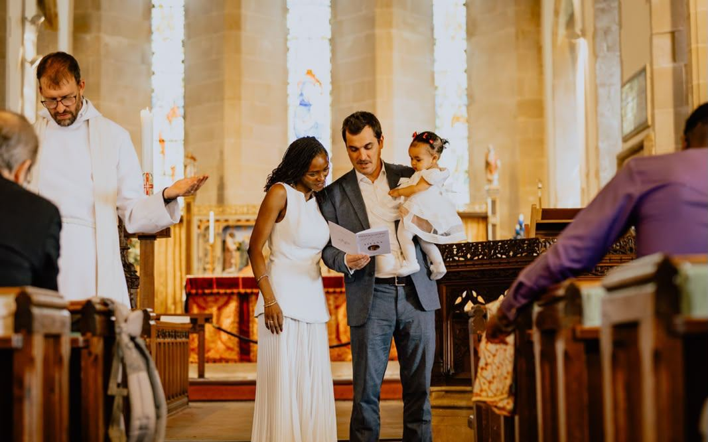

Baptism and confirmation
Beginning, and growing in, the journey of faith.
Baptism, sometimes called christening, is the start of a journey of faith. Confirmation is when someone who has been baptised affirms that faith for themselves. We also offer a service of thanksgiving and blessing for children. We'd love to talk with you about any of these, whether for your child or for yourself.
Baptism for children
- Get in touch with the Rector to talk about a date. The enquiry form below is the easiest way.
- We'll meet to talk through the service and what the promises mean.
- You'll choose godparents. All godparents must have been baptised, and ideally confirmed too.
Get in touch
Make a baptism enquiry for a child
Or, if you'd rather, email or phone the Rector: revthomaspelham@gmail.com · 07856 256 174
How we use your details: privacy notice.
Thanksgiving and blessing for a child

Some parents would love to celebrate their child and give thanks to God, but don't feel able to make the baptism promises, either on their child's behalf or for themselves. That's absolutely fine, and we'd love to help.
We offer a service of Thanksgiving for the Gift of a Child. We give thanks to God for your child, your child is named and blessed, and we pray for you as a family. There are no promises to make and no godparents are needed, though you're welcome to choose "supporting friends". It can be part of a Sunday morning service, or a separate service for family and friends.
A thanksgiving doesn't close the door to baptism. Your child can be baptised later, or choose baptism for themselves when they're older.
To talk it through, contact the Rector: revthomaspelham@gmail.com or 07856 256 174.
Adult baptism and confirmation
At confirmation, the bishop prays for each person to be strengthened by the Holy Spirit as they affirm the promises made at their baptism. It's open to teenagers and adults, and usually follows a short time of preparation. If you haven't been baptised, you can be baptised and confirmed at the same service.
If you're interested, or simply curious, please contact the Rector directly: revthomaspelham@gmail.com or 07856 256 174.
The Church of England has more about christenings and confirmation.